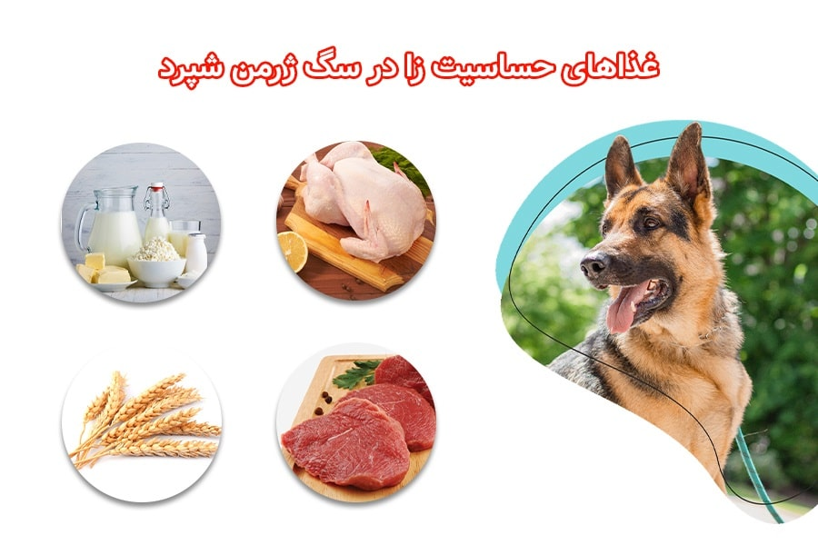

سگ ژرمن به خاطر هوش بالا، توانایی یادگیری زیاد و انرژی فراوانی که داره یکی از محبوبترین سگهای دنیاست و حتی در مشاغل مهمی مثل پلیس، ارتش، هلال احمر و… هم ازش استفاده میشه. در این مطلب، پت پرس براتون به طور کامل از غذای سگ ژرمن شپرد صحبت میکنه. اینکه چه رژیم غذایی برای این نژاد سگ مناسبه؟ چه ترکیباتی باید تو غذاهای ژرمن وجود داشته باشن و چرا، مشکلات سلامتی مربوط به تغذیه ژرمن چیه و… .
خیالت راحت ما این راهو بلدیم و بهت کمک میکنیم تا بتونی بهترین غذا رو برای سگ ژرمن از تولگی تا بزرگسالی بخری یا درست کنی.
غذای سگ ژرمن شپرد چیست؟
بر اساس اطلاعات سازمان بینالمللی کنل کلاب AKC، قد ژرمنها تا ۶۶ سانتیمتر و وزنشون تا ۴۰ کیلوگرم میرسه؛ بنابراین با یک سگ واقعا بزرگ طرفیم که نیازهای تغذیهای خاصی هم نیاز داره.
نژاد ژرمن شپرد جزو سگهای کاری دستهبندی میشه و بخاطر جثه بزرگ و انرژی بالایی که داره به طیف متنوعی از مواد غذایی نیاز داره. رژیم غذایی سگ ژرمن شپرد که جزو نژاد سگهای کاری به حساب میاد، باید حاوی مقادیر زیادی پروتئین، ویتامینهای ضروری، چربی، کربوهیدرات، مواد معدنی و اسیدهای چرب باشه.
میزان پروتئین غذای نژاد ژرمن شپرد باید به طور میانگین ۱۸ تا ۲۲% پروتئین و ۱۲۰۰ تا ۲۱۰۰ کالری داشته باشه که این مقدار بر اساس میزان فعالیت، سن، وضعیت سلامتی و … تغییر میکنه.
برای این که اطلاعات دقیقتری از این موضوع داشته باشین که چطور موارد گفته شده روی تغذیه سگ تاثیر میذارن، حتما مقاله غذای سگ چیست رو بخونید.
غذای مقوی برای سگ ژرمن شپرد چه ویژگیهایی داره؟
بهترین غذا برای سگ ژرمن شپرد غذایی هست که علاوه بر میزان پروتئین ذکر شده در بالا حدود ۱۴ درصد هم چربی داشته باشه. پروتئین باید از منابع با کیفیت مثل گوشت گاو، ماهی، مرغ و گوسفند تامین بشه و از غذاهایی که با فرآوردههای جانبی مثل آشغال گوشت و روده و … تهیه شدن استفاده نکنیم؛ چون معمولا نمیتونن نیازهای سگ رو برآورده کنن.
منابع چربی سالم برای تغذیه سگ ژرمن شپرد عبارتند از:
- روغن کانولا
- روغن بذر کتان
- چربی مرغ
البته غذاهای تهیه شده با ماهی آزاد و قزلآلا حرف ندارن چون پر از اسیدهای چرب امگا ۶ و امگا ۳ هستن.
غذای مناسب برای سگ ژرمن شپرد؛ تجاری یا خانگی؟
اگه تصمیم گرفتین که از سگ ژرمن نگهداری کنین باید به خاطر داشته باشین که هزینههای نگهداری از این سگ اصلاً کم نیست!
خرید غذای سگ ژرمن شپرد باکیفیت که پروتئین و مواد مغذی بالایی داره نقش خیلی مهمی در سلامت و طول عمر سگتون داره، پس اگه به سگتون غذای خشک میدین حتما باید از برندهای معتبر و باکیفیت استفاده کنید و فکر خرید غذاهای بیکیفیت رو هم از سرتون بیرون کنین!
البته با توجه به گرون شدن قیمت ارز و ممنوعیت واردات غذای سگ خارجی، این گزینه دیگه خیلی در دسترس نیست!
در صورتی که تمایل به خرید غذای خشک دارین و نمیدونین که چه نوع غذایی برای سگتون بخرین میتونین مقاله غذای خشک سگ و مقاله (کنسرو سگ) رو مطالعه کنین.
اما اگه میخواین خودتون براش غذا درست کنین، نکات زیر رو در نظر داشته باشین.
تهیه غذای خانگی برای سگ ژرمن شپرد
غذای خونگی تازهتر، خوشمزهتر و از نظر اقتصادی هم به صرفهتره؛ ولی حواستون باشه که هر غذایی رو نمیتونید به سگ ژرمن بدین. اگه غذای خونگی ترکیباتش متاسب و بالانس شده نباشه حتی میتونه به سلامتی سگتون آسیب بزنه.
به دلایلی که قبلتر اشاره کردیم، استفاده از غذاهای بیکیفیت مثل آشغال گوشت و اسکلت مرغ و … هم اصلا توصیه نمیشه!
چرا؟ یکم پایینتر بهتون میگیم که سگ ژرمن با چه مشکلات گوارشیای ممکنه روبهرو شه و دادن این چنین خوراکیهایی بهش چقدر میتونه آسیبزننده باشه.
به همین دلیل بهترین توصیه اینه که از دامپزشکان پت پرس برنامه غذایی ویژه سگ ژرمن رو درخواست کنید و غذای مناسب برای سگتون رو در منزل درست کنید.
هرچند غذای خشک از نظر نگهداری، مواد مغذی و قیمت بهتر و به صرفهتره و اکثر صاحبان هم از این نوع غذا استفاده میکنن؛ اما بهترین رژیم غذایی سگ ژرمن شپرد و دیگر نژادهای سگ، ترکیبی از غذای خشک و غذای خانگی نوشته شده توسط دامپزشک هست.
دامپزشکان تغذیه پت پرس براساس مشخصات سگتون مثل نژاد، سن، وزن، میزان فعالیت و … برای سگتون برنامه غذایی مخصوصی مینویسن که بتونه نیازهای بدنش رو تامین کنه. این برنامه کاملترین و بهترین غذا براش محسوب میشه.
سفارش آسان از طریق اپلیکیشن یا پر کردن فرم در صفحه برنامه غذایی

غذای سگ ژرمن ورک، شولاین و بلک چه تفاوتهایی داره؟
رژیم غذایی سگ ژرمن بلک، ژرمن شولاین و ژرمن ورک خیلی فرقی با هم نداره چون همگی در اصل از یک نژاد هستن. فقط اونایی که بیشتر فعالیت میکنن مقدار غذای بیشتری لازم دارن. معمولا مقدار غذای سگ ژرمن ورک باید بیشتر باشه و مخصوصا ژرمن شپرد DDR (یا ژرمن ورک آلمان شرقی) چون وزن و فعالیت بیشتری داره باید بیشتر غذا بخوره.
انواع مشکلات گوارشی ژرمن شپرد در اثر تغذیه نادرست
ژرمن شپردها در مقایسه با نژادهای بزرگ دیگه کولون (روده بزرگ) کوتاهتری دارن و در نتیجه هضم غذا براشون مشکلتره و از طرف دیگه به حساسیتهای پوستی و معده حساسشون معروفن. پس باید در مورد این که به سگ ژرمن چه غذایی بدیم بیشتر دقت کنیم.
شاید بهتر باشه از غذاهایی که غلات دارن (مثل گندم، چاودار، جو و ذرت) برای سگ ژرمن استفاده نکنین چون ممکنه واکنش آلرژیک و مشکلات گوارشی به وجود بیاره. خیلی از برندها از منابع دیگه کربوهیدرات مثل سیب زمینی معمولی و سیب زمینی شیرین استفاده میکنن. البته قبل از انتخاب رژیم بدون غلات، با دامپزشک مشورت کنین.
حواستون باشه که پروتئین بیش از حد هم ممکنه باعث مشکلات گوارشی یا کلیوی بشه.
جلوگیری از چاقی و اضافه وزن در ژرمن شپرد با تغذیه صحیح
ژرمن شپردها بسیار پرانرژی و فعال هستن و اشتهای زیادی هم دارن. بههمین دلیل اگه همیشه غذا در دسترس باشه یا اگه سگتون به اندازه کافی ورزش و فعالیت نکنه ممکنه به سرعت دچار چاقی و اضافه وزن بشه. اگه نتونید دندههای سگ رو به راحتی لمس کنید سگتون دچار چاقیه!
نژاد ژرمن شفرد مستعد بیماریهایی مثل آرتروز، دسپلازی آرنج و دیسپلازی لگن هست و این مشکلات با چاقی و اضافه وزن تشدید میشن. به اعتقاد دامپزشکان بهترین راه برای جلوگیری از این مشکل کنترل برنامه غذایی سگ ژرمن شپرد هست.برای اطلاعات بیشتر در مورد تشخیص و راه های برطرف کردن اضافه وزن در سگتون، یه سری به مطلب چاقی سگ بزنین.
ظرف غذای ژرمن شپرد رو در زمان مشخص جلوش بذارید و ۱۰-۲۰ دقیقه بهش فرصت بدید؛ بعد حتی اگه همه غذا رو نخورده بود هم ظرف رو بردارید تا زمان بعدی غذا خوردن فرا برسه.
این نکته بخشی مهم از روند تربیت سگ ژرمن شپرد هم به حساب میاد.

مشکل نفخ در سگهای ژرمن و تاثیر رژیم غذایی بر آن
نژاد ژرمن مستعد مشکل اتساع و چرخش معده هستن که در اصطلاح بهش نفخ گفته میشه. دلیل دقیقِ این مشکل مشخص نیست اما عواملی مثل سریع خوردن غذا و ورزش شدید بلافاصله بعد از غذا میتونه منجر به این مشکل بشه.
معده پر از گاز میشه و شبیه به یک بادکنک باد میکنه؛ معدهای که پر از گاز شده اغلب دچار چرخش میشه و راه ارتباطی بین معده و سایر ارگانهای بدن بسته میشه و منجر به مشکل جدی سلامتی و حتی مرگ میشه. اگه با بیماری نفخ در سگها آشنا نیستین، مقاله درمان نفخ سگ رو بخونین.
غذاهای تجاری ارزان و بیکیفیت که مملو از کربوهیدراتن هم میتونن در ایجاد نفخ تاثیرگذار باشن. پس بازم میگیم که غذای باکیفیت بخرید.
کارهایی که برای جلوگیری از نفخ در ژرمن شپرد میتونین انجام بدین:
- میزان غذای سگ ژرمن شپرد در روز رو حداقل در ۲ وعده بهش بدید.
- هیچ وقت ظرف غذاش رو کاملا پر نکنید.
- یک ساعت قبل یا بعد از غذا خوردن از فعالیت بدنی شدید سگ جلوگیری کنید.
- مقدار آبی که سگ بعد از غذا میخوره رو محدود کنید. ظرف غذاهایی که داخلش برآمدگی داره از سریع خوردن غذا جلوگیری میکنه.
اگه نمیدونین کدوم ظرف غذا برای ژرمن مناسبه، حتما مقاله ظرف غذای سگ رو بخونین.

بهترین غذای توله سگ ژرمن شپرد از بدو تولد تا ۶ ماهگی
غذای توله سگ نقش مهمی تو سلامت و رشد اونا داره، به خصوص تو نژادی مثل ژرمن که تولههاشون خیلی سریع رشد میکنن.
میزان غذای توله سگ ژرمن و کیفیت غذاش تو ۸ ماه اول زندگی خیلی مهمه؛ چون رشد فوقالعاده سریعی داره و باید مواد مغذی کافی و مناسب برای رشد استخونها و ماهیچههاش رو دریافت کنه. ضمنا چون در حال رشده نباید به هر دلیلی بعضی از وعدههاش حذف بشه و گرسنه بمونه. باید از غذای مخصوص تولههای نژاد بزرگ استفاده کرد. غذاهایی که برای نژادهای کوچیک طراحی شدن معمولا کالری و چربی کمی دارن و ممکنه باعث سوء تغذیه تولهها بشن.
توله ژرمنها هر روز به ۵۰۰ کالری انرژی احتیاج دارن و موقعی که بزرگتر میشن این عدد میره بالا تا موقع بلوغ که باید روزانه حدود ۱۷۰۰ تا ۲۴۰۰ کالری دریافت کنن. البته مقدار کالری کاملا به وزن و مقدار فعالیت سگ بستگی داره.
غذای سگ ژرمن توله باید نسبت به سگهای بالغ پروتئین، چربی، کلسیم و فسفر بیشتری داشته باشه. البته زیادهروی هم خوب نیست و اگه مقدار این مواد خیلی کم یا بیش از حد زیاد باشه ممکنه رشد حیوون متوقف شه یا عوارضی براش پیش بیاد که تا آخر عمر هم باقی بمونه.
اگه تولهها غذای خشک میخورن، باید حتما آب زیادی هم بهشون بدین چون رطوبت این غذاها کمه و اگه در طولانی مدت آب کافی نخورن ممکنه مشکلات کلیوی و کبدی بگیرن. در ادامه میزان و نکات تغذیهای توله سگ ژرمن رو بررسی میکنیم.
توله تازه به دنیا آمده و شیرخوار
بهترین و کاملترین منبع غذای توله سگ ژرمن شپرد زیر ۲ ماه، شیر مادرش هست. به همین دلیل بههیچ وجه تا ۸-۱۰ هفتگی توله را از مادر جدا نکنید و از خرید تولههای شیرخوار خودداری کنید. شیر مادر سرشار از پروتئین و نوعی آنتی بادی به اسم کلستروم است که سیستم ایمنی سگ رو تقویت میکنه و توله سگ بهش خیلی نیاز داره.
اما اگه به هردلیلی امکان تغذیه توله سگ با شیر مادر وجود نداره به هیچ وجه بهش شیر گاو یا بز ندید و از شیرخشک مخصوص توله سگ استفاده کنید. در مورد دوز و مقدار مصرف هم بهتره با دامپزشک مشورت کنید. مطلب نگهداری از توله سگ میتونه اطلاعات خیلی بیشتری در مورد مراقبت اصولی از سگها در سنین تولگی تا بلوغ بهتون بده، پس حتما خوندنش رو فراموش نکنین.
غذای توله سگ ژرمن شپرد دو ماهه
از ۳-۴ هفتگی به بعد توله ژرمن شپرد میتونه با طعمها و غذاهای مختلف آشنا بشه تا سلیقه و غذای مورد علاقه سگ ژرمن شپرد خودتون رو متوجه بشید. در این مرحله از پوره مخصوص برای توله سگ استفاده کنید که از ترکیب غذای خشک توله سگ با آب تهیه میشه. در حدود سن ۶-۸ هفتگی کم کم از رطوبت غذا کم کنید و دیگه بهش غذای خشک بدید؛ اما همیشه آب تازه در اختیارش قرار بدید.
برای خرید و مشاهده قیمت غذای سگ ژرمن شپرد دو ماهه روی لینک زیر کلیک کنید.

تغذیه توله سگ ژرمن شپرد ۲-۴ ماهگی
توله سگ در سن ۸ هفتگی از شیر گرفته میشه و در این موقع میتونید اونو از مادر جدا کنید و به خونه بیارید. در این سن از رطوبت غذا کم کنید تا اینکه در نهایت غذای کاملا خشک بهش بدید. توله سگ ژرمن شپرد از ۲ تا ۴ ماهگی باید ۴-۵ وعده در یک روز غذا بخوره.
استفاده از غذای خشک سگ بزرگسال برای توله ژرمن توصیه نمیشه؛ چون تولهها برای رشد و سلامتشون به مواد مغذی بیشتری نیاز دارن وغذای توله ژرمن شپرد باید حاوی کالری، چربی، پروتئین و کلسیم بیشتری باشه.
پیشنهاد میکنیم در صورت امکان از غذای خشک توله ژرمن شپرد استفاده کنید که کاملا متناسب با نیازهای بدن این نژاد تهیه شده. اگه چنین محصولی موجود نبود میتونید از غذای خشک استفاده کنید. همچنین میتونین از دامپزشکهای تغذیه پت پرس بخواین که غذای خانگی توله سگ ژرمن به شما بدن.
| سن توله سگ | بهترین رژیم غذایی |
|---|---|
| توله ژرمن تازه به دنیا آمده | شیر مادر یا شیرخشک مخصوص توله سگ |
| ۴-۳ هفتگی | پوره و غذای آبکی |
| ۸-۶ هفتگی | غذای خشک مخلوط با آب |
| ۸ هفته به بعد | غذای خشک مخصوص توله سگ |
برنامه غذایی توله سگ ژرمن شپرد ۴-۶ ماه
بین سنین ۴ و ۶ ماهگی، تعداد وعدههای غذایی باید به ۳ وعده در روز کاهش پیدا کنه. نژادهای بزرگ مثل ژرمن شپرد مستعد چاقی و پرخوری هستن و باید از همون تولگی غذا خوردنش رو کنترل کنید.
در این سن میتونید در کنار غذای خشک تجاری از مواد غذایی تازه مثل گوشت، ماهی یا سبزیجات هم استفاده کنید. بعضی از صاحبان سگ دوست دارن برای اینکه سگی تندخو و خشن داشته باشن بهش گوشت خام بدن؛ اما اصلا این کار رو تایید نمیکنیم و توصیه میکنیم حتما گوشت رو بپزید و به تولهسگتون بدید. مراقب استخوان مرغ، گوشت و ماهی باشید تا آسیبی به توله نزنه.
رژیم غذایی توله ژرمن شپرد بعد از ۶ ماهگی
وقتی توله سگتون به ۶ ماهگی رسید وعدههای غذاش باید به دو وعده در روز برسه؛ اما حجم هر وعده کمی افزایش پیدا کنه. غذای خشک مخصوص توله سگ یا غذاهای خانگی مثل گوشت و سبزیجات رو میتونید در دو وعده به سگتون بدید. از همین سن کم کم میتونید غذای سگ بالغ رو هم به غذاش اضافه کنید.


رژیم غذای سگ ژرمن شپرد یک ساله و بیشتر
برخلاف خیلی از نژادهای سگ که تا ۱ سالگی باید فقط از غذای مخصوص توله سگ استفاده کنن؛ در مورد ژرمن شپرد از ۶ ماهگی به بعد میشه کمکم غذا و تشویقی سگ بالغ رو بهش داد. این مساله بخاطر جلوگیری از رشد سریع ژرمن شپرده که میتونه منجر به مشکلات استخوان و مفاصل بشه.
غذای سگ ژرمن شپرد یک ساله و بالغ بهتره با رعایت نکات زیر بهش داده بشه:
- دو وعده در طول روز بیشتر باشه، تا دچار پرخوری و نفخ نشه.
- حاوی حداقل ۱۸% پروتئین و ۵% چربی برای سگهای بالغ و حداقل ۲۲% پروتئین و ۸% چربی برای تولههای در حال رشد باشه.
- اولین ترکیبات غذای ژرمن شپرد باید منابع پروتئینهای حیوانی مثل مرغ، ماهی و گوشت قرمز باشن و بعد کربوهیدرات، غلات، چربی و سبزیجات مختلف.
- میتونه حاوی غلاتی مثل جو، برنج و جو دوسر باشه، چون راحتتر هضم میشن.
- نباید شامل غلاتی مثل ذرت، گندم و سویا باشه، چون هضمش برای ژرمن شپرد سخته.
- داشتن چربیهای سالم مثل روغن ماهی و اسیدهای چرب امگا ۳. وجود این اسیدهای چرب به ژرمن کمک میکنه تا خز و موهای سالمی داشته باشه.
- افزودن سبزیجات مفید و کربوهیدرات لازم.
مقدار و میزان غذای سگ ژرمن شپرد براساس وزن و فعالیتش به شرح زیر است:
| وزن Kg | ۲۶ | ۳۰ | ۳۴ | ۳۸ | ۴۴ |
|---|---|---|---|---|---|
| فعالیت کم | ۲۸۱ گرم | ۳۱۲ گرم | ۳۴۳ گرم | ۳۷۳ گرم | ۴۱۶ گرم |
| فعالیت متوسط | ۳۶۹ گرم | ۴۱۱ گرم | ۴۵۱ گرم | ۴۹۱ گرم | ۵۴۸ گرم |
| فعالیت زیاد | ۴۲۸ گرم | ۴۷۷ گرم | ۵۲۴ گرم | ۵۶۹ گرم | ۶۳۵ گرم |
در ادامه هم بهترین غذای خشک برای سگ ژرمن رو معرفی میکنیم که میتوانید به سگ ژرمن بالغ خود بدهید. برای خرید غذای سگ ژرمن شپرد میتوانید روی محصولات زیر کلیک کنید.
غذای سگ ژرمن حامله و باردار چطور باید باشه؟
مدت زمان باردای سگها تقریبا ۹ هفته (معادل ۶۳ روز) هست که میزان کالری رژیم غذایی سگ باردار ژرمن از یک سوم میانی دوره بارداری ۲ برابر میشه. البته بسته به تعداد توله هایی که داره، ممکنه تا ۵ برابر حالت عادی هم بشه.
سگ ژرمن شپرد باردار یا شیرده به رژیم غذایی خاصی نیاز داره و در مقایسه با سگهای دیگه به انرژی و پروتئین و کلسیم بیشتری نیاز داره.
چربی و پروتئینی که سگ باردار ژرمن تو این دوره بهش نیاز داره نسبت به حالت عادی بیشتره، اما میزان فیبر دریافتی اش کمتره. همینطور میزان غذا برای سگ ژرمن حامله کمتره، چون از هفته سوم به بعد حجم رحم سگ بزرگ میشه و نمیتونه زیاد غذا بخوره و ممکنه بالا بیاره.
دامپزشکهای پت پرس توصیه میکنن که تو این مدت غذای کم حجم و پر کالری بهش داده بشه تا تمام نیازها و ویتامین های سگ رو تامین کنه.
تو دوره بارداری تامین کلسیم خیلی مهمه، به خصوص فولیک اسید. فولیک اسید کمک میکنه تا سیستم عصبی تولهها به صورت کامل رشد کنه و تولهها سالم به دنیا بیان و مشکل عصبی نداشته باشن.
رژیم غذایی سگ ژرمن حامله میتونه هم غذا خشک و هم خانگی باشه، تنها نکته مهم اینه که کیفیت غذا مناسب باشه. نمونه یکی از محصولات معتبر برای سگ ژرمن باردار و شیرده را در ادامه معرفی کردیم.
در صورتی که با اصول و تغذیه سگ باردار آشنایی ندارید، حتما مقاله غذای سگ باردار رو بخونین.
ژرمن شپرد به چه غذاهایی حساسیت داره؟
غذاهایی که ممکنه برای سگ ژرمن حساسیت غذایی ایجاد کنه گوشت مرغ و گوشت گوساله هست. البته گندم و لبنیات هم میتونه عامل ایجاد حساسیت تو ژرمن بشه، اما احتمالش کمتر از دو مورد اوله.
احتمال بروز حساسیت با خوردن گوشت مرغ و یا گوساله تو سگ ژرمن بالاست، اما چیزی نیست که بشه از اول تو رژیم غذایی سگ استفادهش نکنیم. چون ممکنه اصلا ژرمن شپرد شما بهش حساسیت نشون نده.

چطوری غذایی که ژرمن بهش حساسیت داره رو پیدا کنیم؟
حساسیت سگ ژرمن میتونه به خاطر عوامل مختلفی باشه، اما اگه مطمئن هستین که به خاطر غذاست باید از رژیم حذفی برای شناسایی عامل حساسیت زا استفاده کنین.
روش رژیم غذایی حذفی به این صورته که:
ما طی هر دوره حداقل یک ماهه یکی از موادی که بهش مشکوکیم رو برمیداریم تا ببینیم عامل حساسیت بوده یا نه. فرض کنیم که وعده غذایی ژرمن سگ شما شامل: مرغ، گوساله، بوقلمون ، برنج و هویج بوده.
اول شک داریم که ممکنه مرغ باشه، پس فقط گوشت مرغ رو بر میداریم تا ببینیم که مشکل حل میشه یا نه. اگه مرغ عاملش بود و با برداشتن اون سگ شما دیگه دچار حساسیت نشد، معلوم میشه که عامل اصلی مرغ بوده. اما اگه اینطوری نبود، همین کار رو تا پیدا کردن عامل حساسیت ادامه میدیم.
حالا اگه بخوایم مرغ و گوشت گاو رو از برنامه غذایی ژرمن حذف کنیم، خوب چی رو جایگزینش کنیم؟
شما بعد از شناسایی عامل حساسیت زا باید اون غذا رو کم کم از رژیم غذایی ژرمن خارج کنین و از محصولات اگزوجنت استفاده کنین. تو ترکیبات محصولات اگزوجنت به جای مرغ و گوساله از گوشت گوزن، آهو، کانگورو و … استفاده شده که احتمال حساسیت غذایی تو ژرمن رو کاهش میده.
غذاهای ممنوعه برای سگ ژرمن
خیلی از مواد غذایی که تو خونههای همه ما پیدا میشن برای سگ ژرمن شپرد مضر و خطرناک هستن و باید اونا رو از دسترس سگمون دور نگه داریم. مخصوصا اگه برای سگتون آشپزی میکنید و بهش غذای خونگی میدید باید مراقب غذاهای ممنوعه برای ژرمن شپرد باشید.
برخی از غذاهای مضر برای ژرمن شپرد عبارتند از:
- شکلات و کاکائو
- قهوه، چای و نوشیدنیهای کافئین دار
- انگور و کشمش
- مخمر و خمیر
- آووکادو
- گیلاس و آلبالو
- سیر، پیاز، موسیر، تره فرنگی، پیازچه
- ماکادمیا
- قارچ
- جوز هندی
- سیب زمینی خام یا سبز
- برگهای ریواس
- نمک
- گوجه فرنگی سبز (گوجه فرنگی خام یا پخته میتونه باعث مشکلات قلبی عروقی بشه
- زایلیتول (یکجور شیرین کننده مصنوعی)
- گردوی سیاه
- نوشیدنیهای گازدار
برای اینکه با لیست کامل غذاهای خطرناک و مضر برای سگها آشنا بشید پیشنهاد میکنیم مطلب «غذاهای ممنوعه برای سگ» رو حتما مطالعه کنید.
سخن آخر
غذای سگ ژرمن شپرد باید بتونه نیازهاش رو برآورده کنه تا در آینده دچار مشکل نشه. تغذیه اصولی و سالم میتونه زندگی سگ ژرمن شما رو نجات بده. بهترین رژیم غذایی برای سگ ژرمن رو کدوم میدونین: تجاری یا خونگی؟ اگه انتخابتون خونگیه بهمون بگین از چه ترکیباتی استفاد میکنین و اگه غذای تجاری میخرین، کدوم غذا از نظر شما بهترین گزینه برای ژرمن شپرده؟


{kind=link}
به همین دلیل بهترین توصیه اینه که از دامپزشکان پت پرس فرمول غذایی اختصاصی و طرز تهیه غذای سگ ژرمن رو درخواست کنید و غذای مناسب برای سگتون رو در منزل درست کنید
ممنونم از سایت بسیار خوبتون تمام مطالب لازم برای سگ رو من تونستم در این سایت پیدا کنم بسیار سپاس گذارم فقط یک چیز لطفا چگونگی آموزش سگ مثل بشین پاشو بخواب و….رو در سایتتون قرار بدین ممنون
سلام دوست عزیز،
برای تربیت سگ میتونین این ویدیو رو مشاهده کنین:
ویدیو آموزشی تربیت سگ
بزای کتاب هم این کتاب میتونه کمکتون کنه:
راهنمای جامع تربیت سگ، از تولگی تا بزرگسالی
سلام و ممنون بابت مطالب خیلی خوبتون.
من میخوام یه سگ ژرمن شپرد بخرم. یه توله ۲ ماهه است که میخوام ۳ ماهه که شد از مادرش جداش کنم.
میخواستم ببینم غذای خونگی هم میشه بهش داد؟ مثلا ترکیبی از گوشت و مرغ و ذرت و گندم و غیره رو بپزم، آیا میتونه براش مفید باشه؟
دستور غذایی که بتونه همه مواد مورد نیاز رو به بدنش برسونه وجود داره؟
راستش دوست ندارم به غذای آماده عادت کنه.
سلام علی عزیز،
بهتره که حیوونا به سرپرستی گرفته بشن تا خریداری.
غذای خونگی هم میشه داد ولی احتمال اینکه حداقل یه ماده ی مغذی بهش نرسه وجود داره.(حتی اگه قرص مولتی ویتامین بدین تضمینی از بابت مواد معدنی وجود نداره مگه اینکه مکملی تهیه کنین که همه ی مواردو فرموله داشته باشه) بهترین کار اینه که درکنارش غذای خشکم بهش بدین که خیالتون از بابت موادمغذی راحت باشه.
تشکر از شما من برای از بین بردن رفتارهای بد سگ ژرمن شپرد می تونم از تشویقی سگ استفاده کنم ؟
سلام و تشکر از شما دوست عزیز این کار شدنی هستش اما بهتر است که اصولی تربیت شود و کتاب الکترونیکی تربیت سگ ژرمن شپرد را مطالعه کنید
کتاب تربیت سگ ژرمن شپرد
سلام خسته نباشید تشکر از مطلب جامعتون یک سوال داشتم این بود که سگ ژرمن شپرد من بسیار بد غذا شده است و سر موقع غذا نمی خورد باید چیکار کنم ؟
سلام و عرض ادب خدمت دوست برزگوارم باید بگم برای حل این مشکل می توانید از کتاب الکترونیکی تربیت سگ ژرمن شپرد استفاده کنید
کتاب تربیت سگ ژرمن شپرد